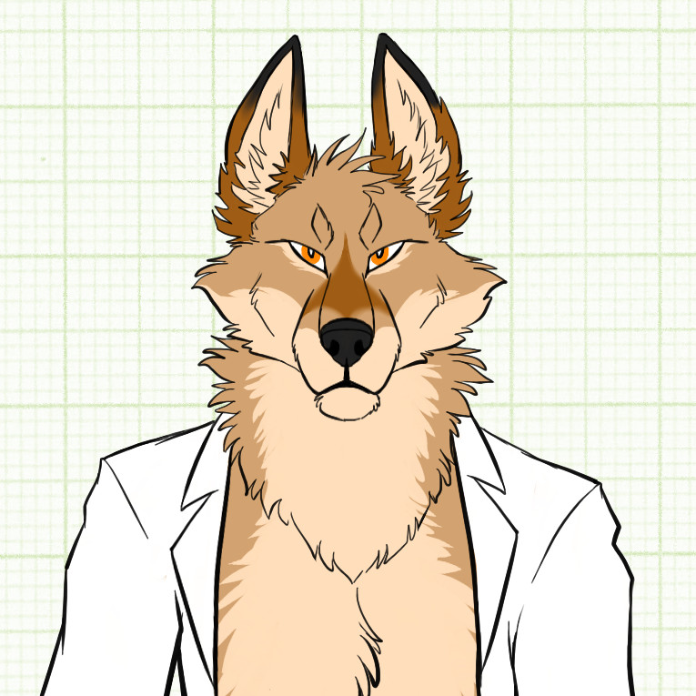
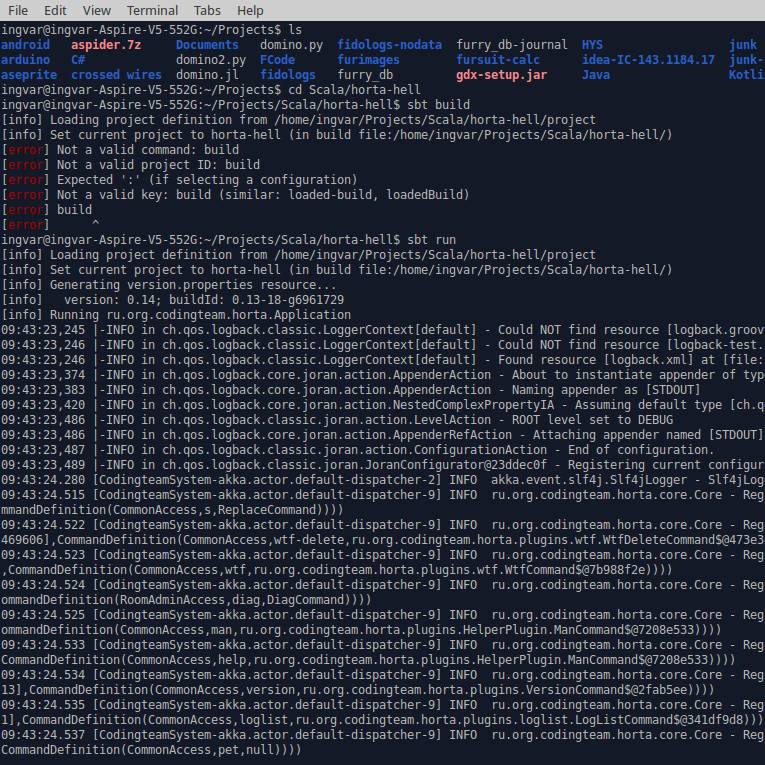
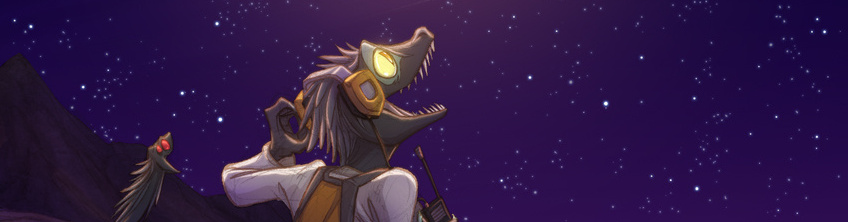
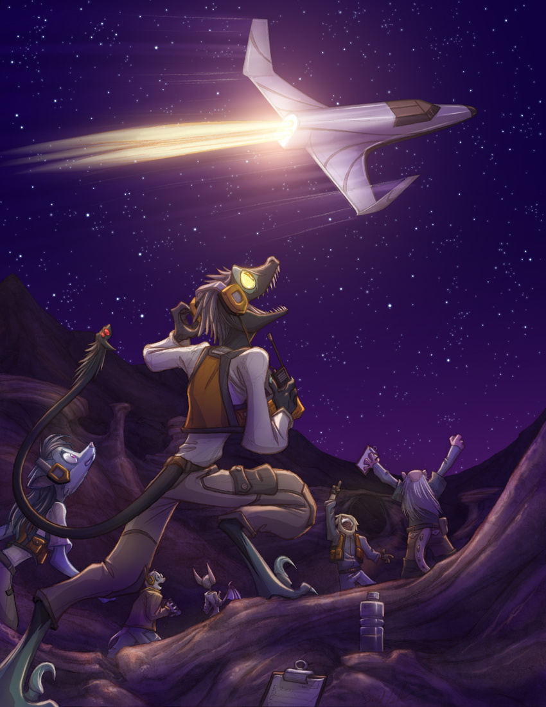
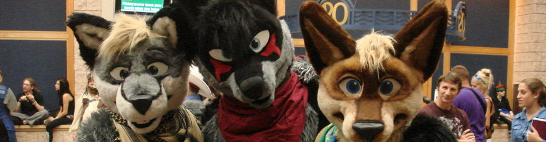
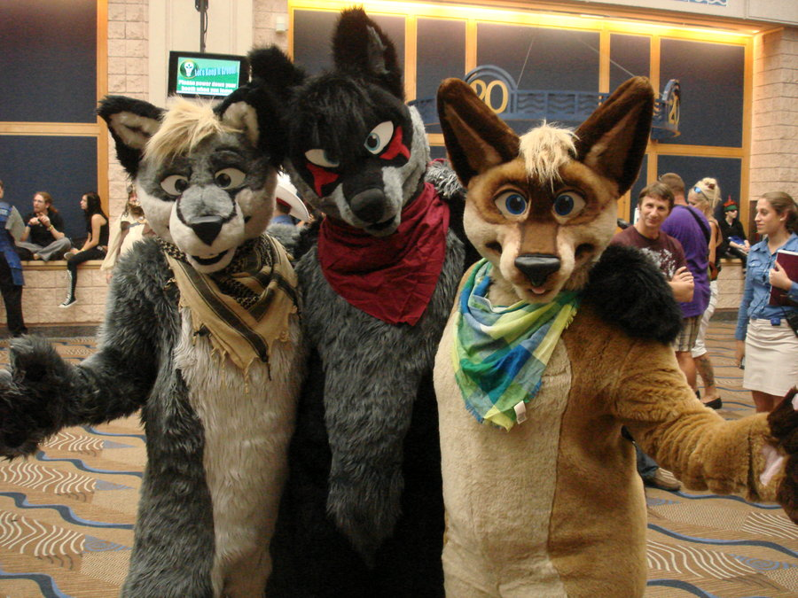
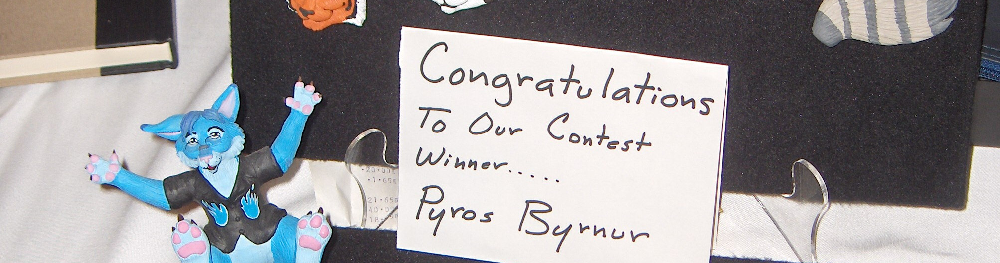
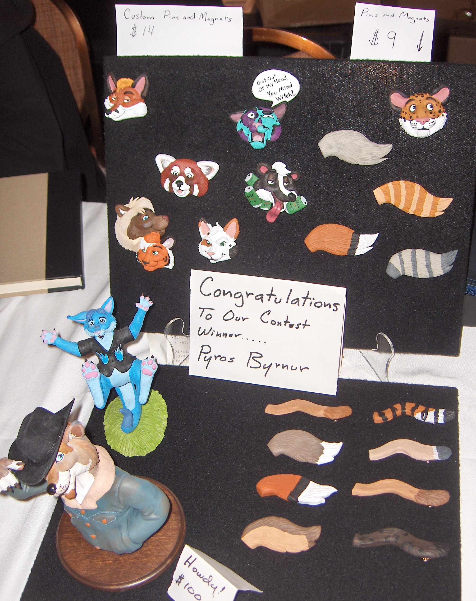

<!DOCTYPE html>
<meta charset="UTF-8">
<html>
<title>Ingvar Jackal's Home Page</title>
<link rel="stylesheet" href="w3.css">
<!--You're curious, eh? xmpp:ingvarjackal@is-a-furry.org-->

<style>
html {
    overflow-y: scroll; 
}
.centred {
    text-align: center
}
.white_outline {
    color: black;
    text-shadow: -1px 0 white, 0 1px white, 1px 0 white, 0 -1px white;
    opacity: 0.75;
    cursor:pointer;
    -webkit-user-select: none;  /* Chrome all / Safari all */
    -moz-user-select: none;     /* Firefox all */
    -ms-user-select: none;      /* IE 10+ */
    user-select: none;          /* Likely future */     
}
.furrySlides {
    display:none;
}
.w3-left, .w3-right, .w3-badge {
    cursor:pointer;
}
.w3-badge {
    height:13px;
    width:13px;
    padding:0;  
}
.header-style {
    font-size: 3.2vw;
}
.general-text {
    font-size: 120%;
}
.padded {
    margin-right: 15vw;
    margin-left: 15vw;
}
.padded-mobile {
    margin-right: 1vw;
    margin-left: 1vw;
}
.general-text-mobile {
    font-size: 180%;
}
.header-style-mobile {
    font-size: 200%;
}
</style>

<body class="padded general-text" style="background-color: #F2F2F2">
    <header class="w3-container w3-teal w3-round-xlarge">
        <h1 id="header_text" class="header-style">
            <!--moved to localization-->
        </h1>
    </header>
    <footer class="w3-container">
        <p id="intro1_text"><!--moved to localization--></p>
        <p id="intro2_text"><!--moved to localization--></p>
        <center>
            <button type='button' onclick='openTab("Furry")' class="w3-btn w3-teal w3-round-xlarge" style='width:50% cursor: pointer'>
                <div class="w3-display-container w3-text-black">
                    
                    <div class="w3-display-middle" style="font-size: 4vw"><strong class="white_outline" id="furry_button_text"><!--moved to localization--></strong></div>
                </div>
            </button>
            <button type='button' onclick='openTab("Programming")' class="w3-btn w3-teal w3-round-xlarge" style='width:50% cursor: pointer'>
               <div class="w3-display-container w3-text-black">
                    
                    <div class="w3-display-middle" style="font-size: 2vw"><strong class="white_outline" id="programming_button_text"><!--moved to localization--></strong></div>
                </div>
            </button>
        </center>

        <div id="Programming" class="topic">
            <p id="programming1_text"><!--moved to localization--></p>
            <p id="programming2_text"><!--moved to localization--></p>
            <p id="programming3_text"><!--moved to localization--></p>
            <p id="programming4_text"><!--moved to localization--></p>
            <p id="programming5_text"><!--moved to localization--></p>
        </div>

        <div id="Furry" class="topic">
            <p id="furry1_text"><!--moved to localization--></p>
            <p id="furry2_text"><!--moved to localization--></p>
            <p id="furry3_text"><!--moved to localization--></p>
            <p id="furry4_text"><!--moved to localization--></p>
            <p id="furry5_text"><!--moved to localization--></p>
            
            <div class="w3-content w3-display-container">
                
                <div id="dreamkeepers_modal" class="w3-modal" onclick="this.style.display='none'">
                  <span class="w3-closebtn w3-hover-red w3-container w3-padding-16 w3-display-topright">&times;</span>
                  <div class="w3-modal-content w3-animate-zoom">
                    
                  </div>
                </div>
                
                
                <div id="fursuits_modal" class="w3-modal" onclick="this.style.display='none'">
                  <span class="w3-closebtn w3-hover-red w3-container w3-padding-16 w3-display-topright">&times;</span>
                  <div class="w3-modal-content w3-animate-zoom">
                    
                  </div>
                </div>
                
                
                <div id="sculptures_modal" class="w3-modal" onclick="this.style.display='none'">
                  <span class="w3-closebtn w3-hover-red w3-container w3-padding-16 w3-display-topright">&times;</span>
                  <div class="w3-modal-content w3-animate-zoom">
                    
                  </div>
                </div>
                
                
                <div id="youtube_modal" class="w3-modal" onclick="this.style.display='none'">
                  <div class="w3-modal-content w3-animate-zoom" id="iframe_holder">
                  </div>
                </div>
              
              <div class="w3-center w3-section w3-large w3-text-white w3-display-bottomleft" style="width:100%">
                <div class="w3-left w3-padding-left w3-hover-text-khaki white_outline" onclick="plusDivs(-1)">&#10094;</div>
                <div class="w3-right w3-padding-right w3-hover-text-khaki white_outline" onclick="plusDivs(1)">&#10095;</div>
                <span class="w3-badge demo w3-border w3-transparent w3-hover-white" onclick="currentDiv(1)"></span>
                <span class="w3-badge demo w3-border w3-transparent w3-hover-white" onclick="currentDiv(2)"></span>
                <span class="w3-badge demo w3-border w3-transparent w3-hover-white" onclick="currentDiv(3)"></span>
                <span class="w3-badge demo w3-border w3-transparent w3-hover-white" onclick="currentDiv(4)"></span>
              </div>
            </div>
        </div>
        
        <h2 id="contacts_text"><!--moved to localization--></h2>
        <p id="telegram_dynamic_spam_prevent"><!--moved to antispam dynamic rendering--></p>
        <p id="email_dynamic_spam_prevent"><!--moved to antispam dynamic rendering--></p>
        <p id="skype_dynamic_spam_prevent"><!--moved to antispam dynamic rendering--></p>
        <p id="vk_dynamic_spam_prevent"><!--moved to antispam dynamic rendering--></p>
    </footer>
</body>

<script>

var localization  = {
    "en": {
        "header_text": "Ingvar Jackal's Home Page <button type='button' onclick='enableLocalization(localization[\"ru\"])' class='w3-teal' style='border: none; float: right'>RU</button>",
        "intro1_text": "I am <b>Ingvar Jackal</b> - programmer, anthrojackal and ex microbiologist, sci-fi fan and electronics hobbyist.",
        "intro2_text": "<b>Feel free to contact</b> me or refer detailed explanation of my interests below.",
        "furry_button_text": "FURRY",
        "programming_button_text": "PROGRAMMING",
        "programming1_text": "I am senior systems developer.",
        "programming2_text": "My main programming interests are server/backend programming for Java platform and applied machine learning.",
        "programming3_text": "You may find <b>Java</b>, <b>Python</b>, <b>Scala</b>, <b>Kotlin</b> and many other projects in my public <b><a href='https://github.com/IngvarJackal/'>repository</a></b>.",
        "programming4_text": "I am member of <b><a href='https://github.com/codingteam'>Codingteam</a></b> - non-profit organization of programmers and engineers.",
        "programming5_text": "Also, I <b>tutor</b> beginner programmers for free and <b>contribute</b> to interesting open-source projects; <b>feel free to contact</b> me to get my current status/open apprentice slots.",
        "furry1_text": "The <b>furry fandom</b> is a subculture of people, interested in fictional anthropomorphic animal characters with human personalities and characteristics like exhibiting human intelligence and facial expressions, the ability to speak, walk on two legs, wear clothes etc. like cartoon animals from The Lion King or Zootopia.",
        "furry2_text": "Members of furry fandom gather on the Internet and at <b>furry conventions</b>. I am active participant of furry fandom since 2009. You may find me on FurAffinity or Telegram chats. Also, I participate in furry conventions like <b><a href='http://en.wikifur.com/wiki/WUFF'>WUFF</a></b>.",
        "furry3_text": "Many furry fans create <b>fursona</b> - anthropomorphic animal character which furry fans associate themselves with. For example, I am cybernetic anthropomorphic golden jackal.",
        "furry4_text": "Furries draw art, write literature, play games and perform <b>fursuiting</b>. Fursuits are animal costumes which usually used by furry fans for personal enjoyment, mostly in public places or during furry conventions. Fursuiters (fans of fursuiting) sometimes adopt another personality while in costume for the purpose of performance. Unlike mascot suits, fursuits represent a stand-alone character.",
        "furry5_text": "Generally, fandom is open and full with young friendly people. If you're interested, <b>feel free to contact</b> me via credentials below <b>=^.^=</b>",
        "contacts_text": "Contacts"
    },
    "ru": {
        "header_text": "Домашняя страничка Ингвара Шакала <button type='button' onclick='enableLocalization(localization[\"en\"])' class='w3-teal' style='border: none; float: right'>EN</button>",
        "intro1_text": "Я <b>Ингвар Шакал</b> - программист, антропоморфный шакал и бывший микробиолог, увлекаюсь электроникой и научной фантастикой.",
        "intro2_text": "Вы можете <b>связаться со мной</b> или прочесть более подробное описание моих интересов ниже",
        "furry_button_text": "ФУРРИ",
        "programming_button_text": "ПРОГРАМ<br>МИРОВАНИЕ",
        "programming1_text": "Я старший разработчик бизнес-систем.",
        "programming2_text": "Основными областями интереса в программировании для меня являются серверное программирование для экосистемы Java и прикладное машинное обучение",
        "programming3_text": "Вы можете найти проекты на <b>Java</b>, <b>Python</b>, <b>Scala</b>, <b>Kotlin</b> и многие другие в моём публичном <b><a href='https://github.com/IngvarJackal/'>репозитории</a></b>.",
        "programming4_text": "Я состою в <b><a href='https://github.com/codingteam'>Codingteam</a></b> - некоммерческой организации программистов и инженеров.",
        "programming5_text": "Также я бесплатно <b>обучаю</b> начинающих программистов и делаю вклад в интересные опенсорсные проекты; <b>свяжитесь со мной</b>, чтобы узнать мой текущий статус или наличие свободных мест для подмастерья.",
        "furry1_text": "<b>Фурри</b> - это субкультура людей, которым нравятся придуманные животные с личностями и человеческими чертами, такими как разум или мимика лица, способность говорить, ходить на двух ногах, носить одежду и т.п., например персонажи из Короля Льва или Зверополиса.",
        "furry2_text": "Члены фурри-сообщества собираются в интернете и на <b>фурри-конвенциях</b>. Я активно участвую в движении с 2009 года. Вы можете найти меня на FurAffinity или в фурри-чатах Telegram. Также я участвую в фурри-конвенциях, таких как <b><a href='http://ru.wikifur.com/wiki/WUFF'>ВУФФ</a></b>.",
        "furry3_text": "Многие фурри-фаны создают <b>фурсону</b> - антромопорфного животного персонажа, с которым они себя ассоциируют. Например, я - антропоморфный шакал-киборг.",
        "furry4_text": "У фуррей полно рисунков, литературы, мы играем и занимаемся <b>фурсьютингом</b>. Фурсьюты - это костюмы животных, которые обычно можно встретить в публичных местах или во время фурри-конвенций. Фурсьютеры (фанаты фурсьютинга) иногда вживаются в роль, когда находятся в костюме во время выступления.  В отличии от маскотов, фурсьют представляет собой самостоятельного персонажа.",
        "furry5_text": "В общем, фурри-сообщество открытое, а его участники зачастую молоды и дружелюбны. Если вам интересно, <b>сконтактируйте</b> со мной по любой из ссылок ниже <b>=^.^=</b>",
        "contacts_text": "Контакты"
    }
}

document.getElementById("telegram_dynamic_spam_prevent").innerHTML = '<b>telegram:</b> <a href="'+window.atob('aHR0cHM6Ly90ZWxlZ3JhbS5tZS9pbmd2YXJqYWNrYWw=')+'">'+window.atob('dGVsZWdyYW0ubWUvaW5ndmFyamFja2Fs')+'</a>';
document.getElementById("email_dynamic_spam_prevent").innerHTML = '<b>email:</b> <a href="mailto:'+window.atob('aW5ndmFyamFja2FsQGdtYWlsLmNvbQ==')+'">'+window.atob('aW5ndmFyamFja2FsQGdtYWlsLmNvbQ==')+'</a>';
document.getElementById("skype_dynamic_spam_prevent").innerHTML = '<b>skype:</b> <a href="skype:'+window.atob('aW5ndmFyamFja2Fsd2Vyd3I=')+'">'+window.atob('aW5ndmFyamFja2Fsd2Vyd3I=')+'</a>';
document.getElementById("vk_dynamic_spam_prevent").innerHTML = '<b>VK:</b> <a href="'+window.atob('aHR0cHM6Ly92ay5jb20vaW5ndmFyamFja2Fs')+'">'+window.atob('dmsuY29tL2luZ3ZhcmphY2thbA==')+'</a>';

function enableLocalization(d) {
    for (var key in d) {
        document.getElementById(key).innerHTML = d[key];
    }
}

enableLocalization(localization["en"])

var lastName = ""
openTab(lastName)
function openTab(cityName) {
    var i;
    var x = document.getElementsByClassName("topic");
    for (i = 0; i < x.length; i++) {
       x[i].style.display = "none";
    }
    if (document.getElementById(lastName.concat("LI")) != null) {
        document.getElementById(lastName.concat("LI")).className = "w3-teal";
    }
    if (cityName != lastName) {
        document.getElementById(cityName).style.display = "block";
        lastName = cityName
        document.getElementById(cityName.concat("LI")).className = "w3-cyan";
    } else {
        lastName = ""
    }
}

var slideIndex = 1;
showDivs(slideIndex);

function plusDivs(n) {
  showDivs(slideIndex += n);
}

function currentDiv(n) {
  showDivs(slideIndex = n);
}

var youtubeLoaded = false
function loadYoutube() {
    if (!youtubeLoaded) {
        document.getElementById('iframe_holder').innerHTML="<iframe width='100%' height='500' src='https://www.youtube.com/embed/wwT4ZXW3xYE' frameborder='0' allowfullscreen></iframe>";
        youtubeLoaded = true
    }
}

function showDivs(n) {
  var i;
  var x = document.getElementsByClassName("furrySlides");
  var dots = document.getElementsByClassName("demo");
  if (n > x.length) {slideIndex = 1}    
  if (n < 1) {slideIndex = x.length}
  for (i = 0; i < x.length; i++) {
     x[i].style.display = "none";  
  }
  for (i = 0; i < dots.length; i++) {
     dots[i].className = dots[i].className.replace(" w3-white", "");
  }
  x[slideIndex-1].style.display = "block";  
  dots[slideIndex-1].className += " w3-white";
}

function mobilecheck() {
  var check = false;
  (function(a){if(/(android|bb\d+|meego).+mobile|avantgo|bada\/|blackberry|blazer|compal|elaine|fennec|hiptop|iemobile|ip(hone|od)|iris|kindle|lge |maemo|midp|mmp|mobile.+firefox|netfront|opera m(ob|in)i|palm( os)?|phone|p(ixi|re)\/|plucker|pocket|psp|series(4|6)0|symbian|treo|up\.(browser|link)|vodafone|wap|windows ce|xda|xiino/i.test(a)||/1207|6310|6590|3gso|4thp|50[1-6]i|770s|802s|a wa|abac|ac(er|oo|s\-)|ai(ko|rn)|al(av|ca|co)|amoi|an(ex|ny|yw)|aptu|ar(ch|go)|as(te|us)|attw|au(di|\-m|r |s )|avan|be(ck|ll|nq)|bi(lb|rd)|bl(ac|az)|br(e|v)w|bumb|bw\-(n|u)|c55\/|capi|ccwa|cdm\-|cell|chtm|cldc|cmd\-|co(mp|nd)|craw|da(it|ll|ng)|dbte|dc\-s|devi|dica|dmob|do(c|p)o|ds(12|\-d)|el(49|ai)|em(l2|ul)|er(ic|k0)|esl8|ez([4-7]0|os|wa|ze)|fetc|fly(\-|_)|g1 u|g560|gene|gf\-5|g\-mo|go(\.w|od)|gr(ad|un)|haie|hcit|hd\-(m|p|t)|hei\-|hi(pt|ta)|hp( i|ip)|hs\-c|ht(c(\-| |_|a|g|p|s|t)|tp)|hu(aw|tc)|i\-(20|go|ma)|i230|iac( |\-|\/)|ibro|idea|ig01|ikom|im1k|inno|ipaq|iris|ja(t|v)a|jbro|jemu|jigs|kddi|keji|kgt( |\/)|klon|kpt |kwc\-|kyo(c|k)|le(no|xi)|lg( g|\/(k|l|u)|50|54|\-[a-w])|libw|lynx|m1\-w|m3ga|m50\/|ma(te|ui|xo)|mc(01|21|ca)|m\-cr|me(rc|ri)|mi(o8|oa|ts)|mmef|mo(01|02|bi|de|do|t(\-| |o|v)|zz)|mt(50|p1|v )|mwbp|mywa|n10[0-2]|n20[2-3]|n30(0|2)|n50(0|2|5)|n7(0(0|1)|10)|ne((c|m)\-|on|tf|wf|wg|wt)|nok(6|i)|nzph|o2im|op(ti|wv)|oran|owg1|p800|pan(a|d|t)|pdxg|pg(13|\-([1-8]|c))|phil|pire|pl(ay|uc)|pn\-2|po(ck|rt|se)|prox|psio|pt\-g|qa\-a|qc(07|12|21|32|60|\-[2-7]|i\-)|qtek|r380|r600|raks|rim9|ro(ve|zo)|s55\/|sa(ge|ma|mm|ms|ny|va)|sc(01|h\-|oo|p\-)|sdk\/|se(c(\-|0|1)|47|mc|nd|ri)|sgh\-|shar|sie(\-|m)|sk\-0|sl(45|id)|sm(al|ar|b3|it|t5)|so(ft|ny)|sp(01|h\-|v\-|v )|sy(01|mb)|t2(18|50)|t6(00|10|18)|ta(gt|lk)|tcl\-|tdg\-|tel(i|m)|tim\-|t\-mo|to(pl|sh)|ts(70|m\-|m3|m5)|tx\-9|up(\.b|g1|si)|utst|v400|v750|veri|vi(rg|te)|vk(40|5[0-3]|\-v)|vm40|voda|vulc|vx(52|53|60|61|70|80|81|83|85|98)|w3c(\-| )|webc|whit|wi(g |nc|nw)|wmlb|wonu|x700|yas\-|your|zeto|zte\-/i.test(a.substr(0,4))) check = true;})(navigator.userAgent||navigator.vendor||window.opera);
  return check;
}
if (mobilecheck()) {
    var p = document.getElementsByClassName("padded");
    for (i = 0; i < p.length; i++) {
        p[i].className = p[i].className.replace("padded", "padded-mobile")
    }
    var p = document.getElementsByClassName("general-text");
    for (i = 0; i < p.length; i++) {
        p[i].className = p[i].className.replace("general-text", "general-text-mobile")
    }
    var p = document.getElementsByClassName("header-style");
    for (i = 0; i < p.length; i++) {
        p[i].className = p[i].className.replace("header-style", "header-style-mobile")
    }
}


</script>

</html> 
